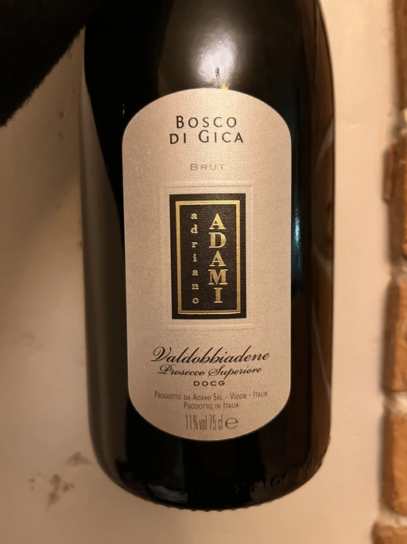

- Type
- White Sparkling, Brut
- Producer
- Adriano Adami
- Vintage
- NV
- Location
- Italy, Conegliano Valdobbiadene Prosecco DOCG
- Grapes
- Glera
- Alcohol
- 11
- Sugar
- NA
- Price
- 531 UAH
- Cellar
- N/A
Ratings
2022-09-24 - 7.50
Good classical Prosecco, not vulgar. Peach, apples, white flowers, and honey. Fresh, soft, well balanced. All-in-all, a pleaser that doesn’t draft your attention, so you can enjoy while being focused on other things (e.g. communication with other people?).
I tasted it after Francoise Bedel Origin’elle (2017) NV, and that was a mistake. I am giving an extra point as an apology.